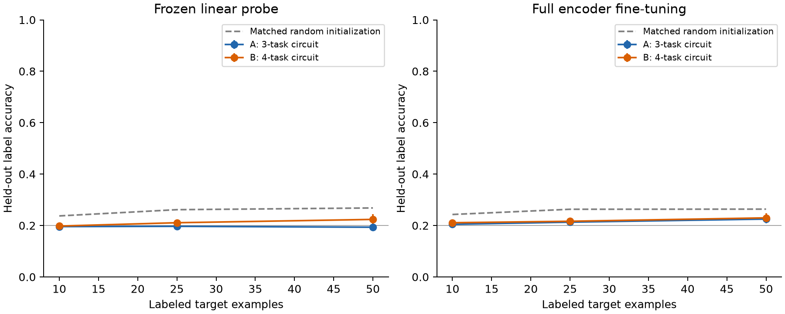
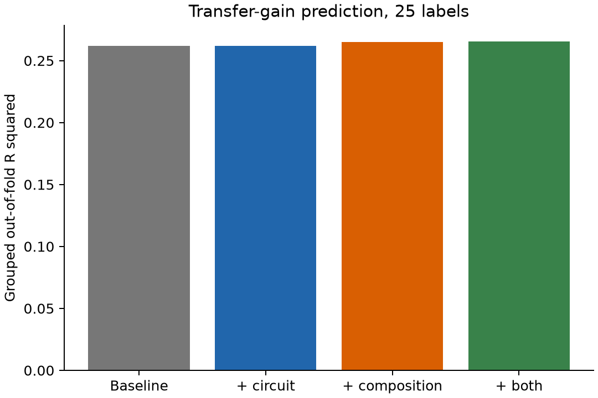
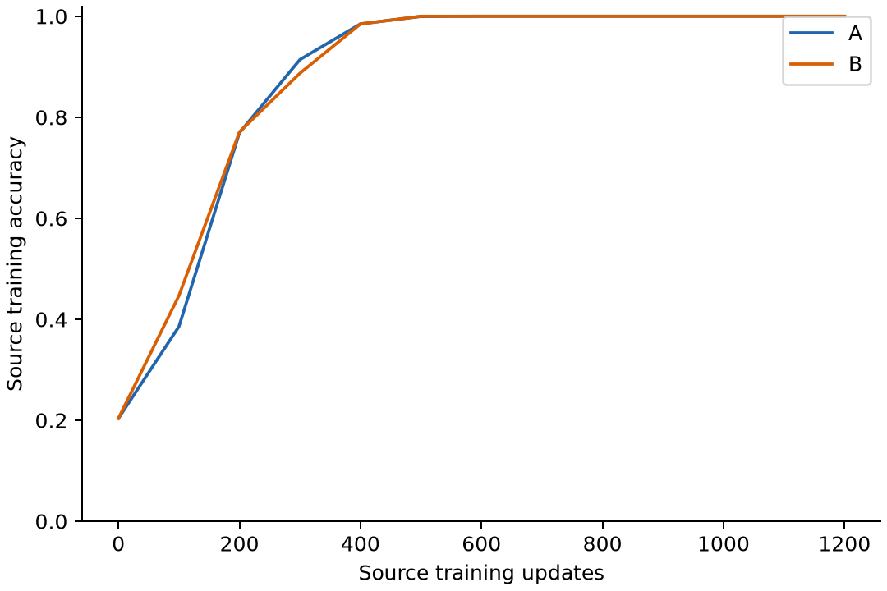
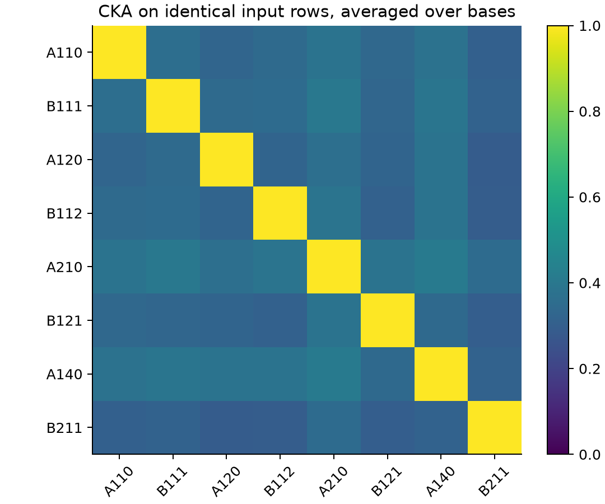

完成 48 个源模型、8 种组合、3 套随机输入基与 10 个共同未见目标。源任务最低训练准确率 100.00%；98% 拟合程度门槛：通过。门槛不检验未见输入上的源任务泛化。
A 的最小依赖涉及三个任务，B 涉及四个任务。两组均有四任务、秩三、均匀边际、两两独立标签和相同联合熵。每个源任务训练曝光为 750,000 次。
范围：源训练覆盖所有输入，支持集与测试集只在目标标签上隔离。本轮检验同实体的新任务迁移，不是新实体或分布外泛化。
主结果为 25 个目标标签下的完整微调收益。按整个源任务组合留出所有种子与目标行；基线控制源学习曲线、单任务学习曲线、目标和输入基效应。加入结构后 ΔR²=+0.0033，MAE 减少=-0.018 个百分点，4/8 折 MAE 改善。
两组在所有标签预算与普通读出设定下的平均迁移收益均为负。 本轮结构特征未同时改善 R² 和 MAE；当前结果不足以支持增量预测能力。
事后诊断：已训练的 u/v/w 输出经外部已知数学公式组合，目标测试准确率为 100.00%。这证明目标信息在这些已见输入的表征中可恢复；普通读出差不等于信息缺失。该 oracle 使用外部公式，不是模型自发学会组合。诊断与每个端点。


| 评估 | 标签数 | 组 | 准确率 | 相对随机初始化收益 |
|---|---|---|---|---|
| probe | 10 | A | 19.58% | -4.15 pp |
| probe | 10 | B | 19.79% | -3.94 pp |
| probe | 25 | A | 19.68% | -6.48 pp |
| probe | 25 | B | 21.08% | -5.08 pp |
| probe | 50 | A | 19.34% | -7.48 pp |
| probe | 50 | B | 22.37% | -4.45 pp |
| finetune | 10 | A | 20.47% | -3.83 pp |
| finetune | 10 | B | 21.08% | -3.21 pp |
| finetune | 25 | A | 21.30% | -5.02 pp |
| finetune | 25 | B | 21.65% | -4.67 pp |
| finetune | 50 | A | 22.51% | -3.86 pp |
| finetune | 50 | B | 22.98% | -3.40 pp |


误差条是随机输入基之间的样本标准差。2880 个目标端点不构成 2880 个独立重复。单一 MLP 与有限域不足以证明跨领域普适性；留出的是系数组合，训练仍包含两种依赖模板。
原始数据：metrics.csv；分组预测与各折结果；精确代数审计；配置与环境。